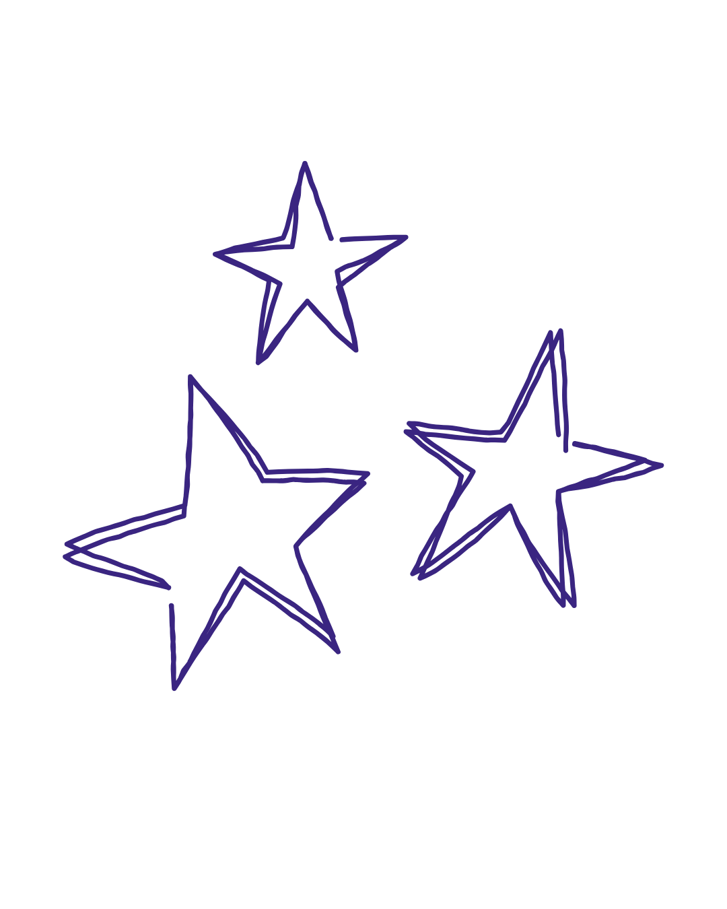
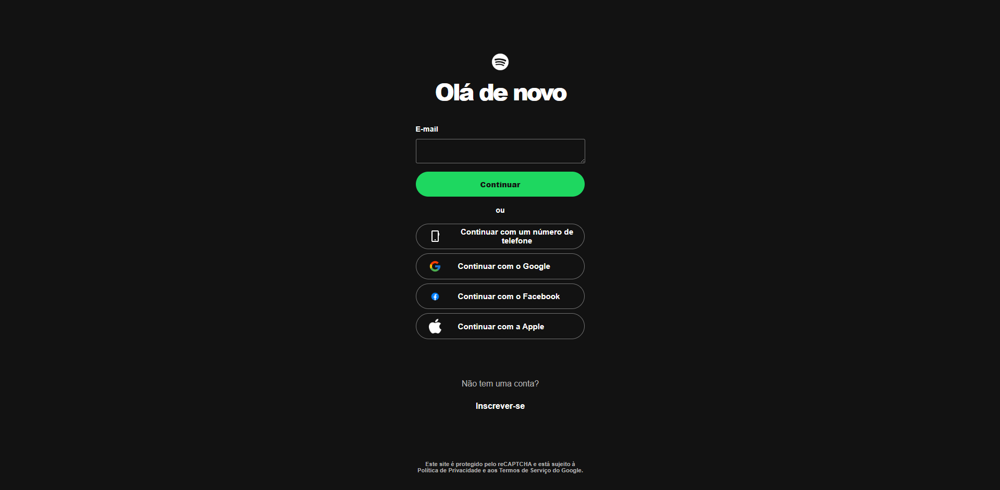
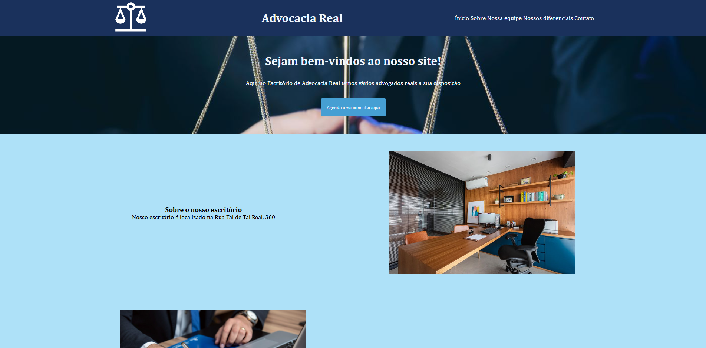
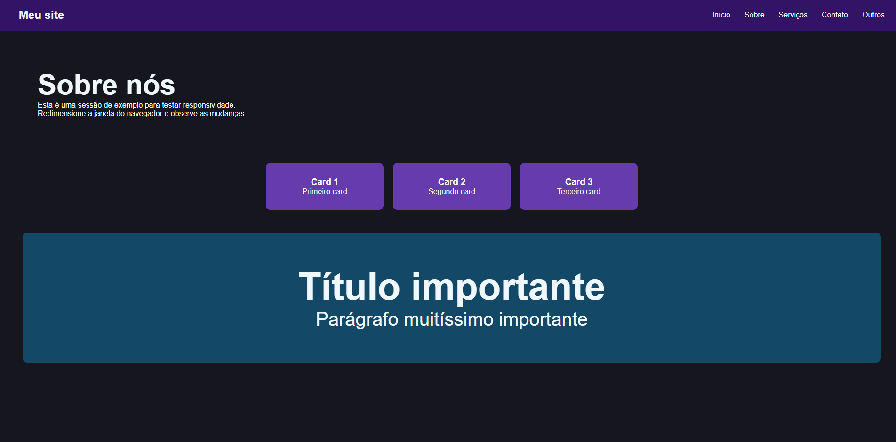
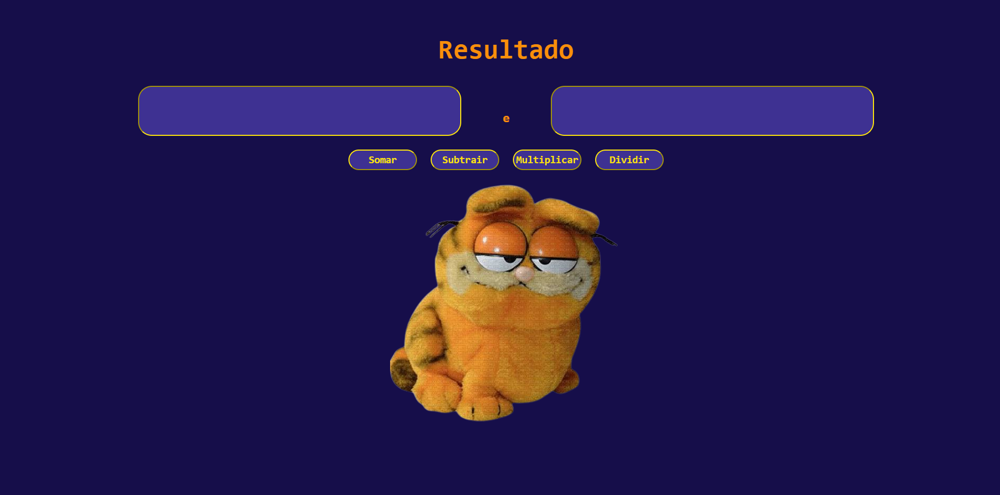
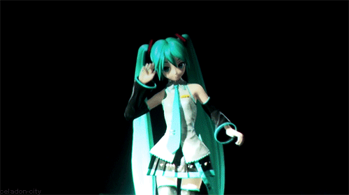

Bem-vindos a meu portfólio!

Sobre mim
Meu nome é Rafa e tenho 19 anos.
Gosto muito de música, sei tocar trompete e viola de arco, e tenho
interesse em aprender mais instrumentos.
Também gosto de desenhar, ler e escrever. Minha cor favorita é roxo e minha comida favorita é
pizza.
Vida
Tenho ensino médio completo, realizei o curso de Interfaces de Sistemas do SENAC e participo do Núcleo de Orquestras Jovens de Novo Hamburgo. No passado também fiz dança, patinação e teatro. Já trabalhei como auxiliar de produção e no momento estou estudando para me tornar musicista.
Meus Projetos

Recriação da página de log-in do Spotify
Este projeto foi criado para desenvolver a percepção de layouts usados em sites
profissionais.
Desenvolvido com HTML e CSS, em julho de 2026.

Desenvolvimento de um site de advocacia fictício
Criado para conhecer as funções que um site possa vir a ter.
Desenvolvido com HTML e CSS, em agosto de 2026.

Teste de responsividade
Feito para testar a responsividade de um site em diferentes tamanhos de tela
Desenvolvido com HTML e CSS.

Calculadora
Calculadora desenvolvida para testar e unir conhecimentos gerais de HTML,CSS e JS.
Desenvolvido com HTML, CSS e Javascript.
Tchau!
